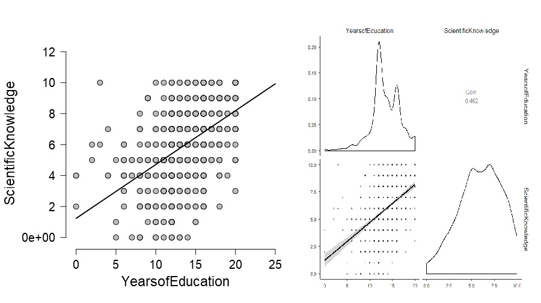

第10單元:描述統計
我們使用2010年芝加哥大學國家民意研究中心(NORC)公開的部分資料SPSS存檔(以下簡種gss2010；存檔下載網址在這個網頁，或者直接點此下載)，做為這個單元的示範案例。JASP與jamovi都可以匯入SPSS存檔，圖1是開啟這份存檔之後的畫面1。
Figure 1: 以JASP開啟GSS 2010存檔資料。
讀者可以看到這份gss2010檔案有五個欄位，每個欄位名稱前面有個圖示，這個圖示標記尺度，決定處理一筆資料的方法。gss2010有名稱的資料欄位，統計實務稱為變項。決定好變項的尺度，我們才能知道要對這筆資料做什麼分析，才能取得我們想知道的資訊。
認識資料尺度
哈佛大學Stanley Stevens(1946)在Science發表的文章主張測量尺度可分為量化尺度(qunatitative scale)與質化尺度(qualitative scale)，現在的統計實務也稱為連續尺度與間斷尺度。兩種主要尺度之下再細分等比(ratio)與等距(interval)尺度，以及序列(ordinal)及名義(nominal)尺度。尺度的定義已成為今日統計軟體程式設計師的編譯原則，也是資料分析者執行分析程序前要先做好的功課。
-
連續尺度：當一筆資料內容都是數字，數值有小數點或有超過25種數值，程式都會判定為連續尺度。這類資料的數值之間的差異可以互相比較，例如gss2010的看電視時數(tvhours)以及人生第一胎年齡(AgeFirstBorn)，心理學常見的智力商數(IQ)也是一種連續尺度。許多統計教科書會區分等距尺度與等比尺度，兩者的差別是等比尺度的資料有零點，就像gss2010的科學知識評分(ScientificKnowledge)，這筆資料是受訪者答對問題的題數，註記為0代表沒有答對任何一題。儘管有此差別，兩種尺度的統計實務處理方法通常是一樣的，所以JASP與jamovi都沒有再做分類，JASP圖示是
 ，jamovi圖示是
，jamovi圖示是 。
。 -
間斷尺度(序列)：一筆資料內容都是數字，但是沒有任何數值有小數點，而且在列的數值不超過25種，JASP與jamovi都會判斷為序列尺度(
 ,)。數值表示資料之間的順序，數值的相加或相減沒有意義，例如全班學生某次考試的成績排名。如果序列尺度的變項是分析的目標，通常會計算各種數值的累積百分比。稍後我們會學習計算中位數，是處理序列尺度的主要方法。
,)。數值表示資料之間的順序，數值的相加或相減沒有意義，例如全班學生某次考試的成績排名。如果序列尺度的變項是分析的目標，通常會計算各種數值的累積百分比。稍後我們會學習計算中位數，是處理序列尺度的主要方法。 -
間斷尺度(名義)：如果一筆資料的內容都是文字，例如受訪者的性別，居住的城鎮名稱等，JASP與jamovi都會判斷為名義尺度(
 ,)。這類資料的數值只有名稱的區別，不能相加相減，也沒有排序的意義。有時我們丟進軟體的資料內容都是數字，但其實是做為名稱的編號，例如全班學生的學號、受訪者的郵遞區號、最經典的擲硬幣試驗結果。程式無法幫我們判斷這種資料，我們要手動改換尺度圖示為與。稍後我們會學習計算眾數，是處理名義尺度的主要方法。
,)。這類資料的數值只有名稱的區別，不能相加相減，也沒有排序的意義。有時我們丟進軟體的資料內容都是數字，但其實是做為名稱的編號，例如全班學生的學號、受訪者的郵遞區號、最經典的擲硬幣試驗結果。程式無法幫我們判斷這種資料，我們要手動改換尺度圖示為與。稍後我們會學習計算眾數，是處理名義尺度的主要方法。
jamovi 0.9版增加資料型態(Data Type)選項，有
Text(文字)、Integer(整數)、Decimal(帶小數點的實數)；以及資料尺度ID。ID必須是Text，Continuous必須是Integer或Decimal，Nomial與Ordinal的資料型態絕對不能是Decimal。
變項的種類
統計實務處理的資料通常不會只有一個變項，而且各種尺度的變項都會存在。變項越多的資料表示資料收集者希望解答的問題相當複雜，但是有統計思考的資料收集者只會在意那些與測試目標有關的變項。科學思考講究提出有效的證據支持或推翻假設，統計思考要使用合適的方法，確認資料是多有效的證據。了解資料裡每個變項是那種證據要素，才能知道要使用那些方法才適合現在的研究問題。不論你動用統計思考要解決什麼問題，首先要搞清楚那些變項是自變項，那些是依變項。手上資料進入統計思考，就會轉變成可以檢驗的命題。
我們用gss2010資料嘗試回答這個問題：在學校接受教育越多年的民眾，科學知識會不會越豐富？以問題的描述來看，能做證據的資料只有科學知識評分(ScientificKnowledge)與受教年數(YearsofEducation)兩個變項。這個問題可再轉化為分析程序的形式：受教年數能解釋科學知識評分多少程度的提高趨勢？前一種問題描述方式，是有受過中學教育的人們，都能理解的科學思考。後一種問題描述方式，指出分析方法要能顯示科學知識評分的變異趨勢，確實隨受教年數的數值次序提高。
統計思考的命題包含兩種證據要素：命題提及的測量對象可以轉換為統計量數，並且使用動詞與介係詞指示變項之間的關係。統計量數取決於變項的測量尺度，例如gss2010的科學知識評分。命題裡的動詞，或者變項之間的介係詞，都是指示變項之間的關係。例如前面提到gss2010的問題之中「科學知識會不會越豐富」，提示分析統計量數的方式。只要能將問題轉化為統計思考的命題，不論處理的資料有多少變項，資料規模不論大小，變項之間的關係都是根據一組自變項與依變項的對應關係，或者用一組自變項的標記架構依變項資料的分組。前一種變項關係在統計實務是從資料找出最有預測力的迴歸式，後一種變項關係在統計實務是檢驗因果關係的實驗設計。
不管當下的問題要探究的是那一種關係，依變項是可化為統計量數的資料集合，自變項規範呈現統計量數的形式–包括文字與圖表。以gss2010範例問題來說，受教年數是自變項，科學知識評分是依變項。我們有很多方式呈現科學知識評分隨受教年數增加改變的趨勢，其中一種是畫出兩個變項的散佈圖(scatter plot)，因為自變項與依變項的定位，散佈圖的x軸是受教年數，y軸是科學知識評分。圖2是JASP與jamovi的操作成果。

Figure 2: 分析2010年美國一般社會調查，受教年數與科學知識評分的共變散佈圖。左：JASP分析結果；右：jamovi分析結果
你可以看到jamovi輸出比JASP更多的資訊，但是兩套散佈圖都有一條直線，代表每個受教年數的受訪民眾的科學知識評分預測值。預測值明顯隨受教年數增加，表示這筆資料支持在學校接受教育越多年的民眾，科學知識越豐富的看法。這條直線是迴歸線(regression line)，我們將在第??單元學習迴歸線的統計實務。
統計量數
接下來介紹各種統計實務必定會處理的統計量數，同時示範JASP描述統計模組的基本操作。jamovi的描述統計模組介面設計與操作，和JASP大同小異，所以本章不做另外示範。最常遇到的統計量數有**集中趨勢(Central Tendency)與變異趨勢(Dispersion)**兩類，在操作示範畫面3、4與5，可以看到模組的功能選單標記這兩類統計量數。這兩種統計量數如何幫助我們解讀資料，請看以下說明。
名義尺度的集中趨勢：眾數
因為前面示範的gss2010沒有精確的名義尺度資料，我們從研究中心網站下載原始gss2010的SPSS存檔，取其中的性別(sex)變項，配合這段示範演練。這個變項資料只有兩種數值：1與2，分別代表男性與女性。從圖3的JASP操作與輸出畫面，你可以注意到變項圖示是 ，表示以數字代表性別，因此報表裡的眾數是2，表示2010年調查的受訪者超過一半是女性。
，表示以數字代表性別，因此報表裡的眾數是2，表示2010年調查的受訪者超過一半是女性。
JASP與jamovi都提供編輯數值標籤(Lable)的，所以我們能另外命名MALE與FEMALE，在長條圖標示每一個長條代表的對象2。
Figure 3: 使用JASP計算名義尺度變項的眾數與繪製長條圖。
因為眾數(Mode)指示資料之中累積次數最多的數值，所以連續尺度的資料也可以使用眾數分析，但是並非最佳呈現集中趨勢統計量數。
序列尺度的集中趨勢：百分位數與中位數
序列尺度資料的可排序性，構成機率事件可以累加，也可以累積事件的百分比。這種特性讓我們能在實務面計算資料的百分位數(percentile)與中位數(median)，而中位數是集中趨勢的一種。這裡使用gss2010受訪者的受教年數資料做示範，圖4示範如何讓JASP輸出三個百分位數(25%,50%,75%)與中位數，以及次數表(frequency table)。

Figure 4: 使用JASP計算序列尺度變項的中位數、百分位數與繪製長條圖。
圖@ref(fig:median_demo)之中的中位數與50%的百分位數是同一個，對照次數表的資訊，讀者可進一步發現為何是如此：留意靠著次數表右邊的三個欄位Percent、Valid Percent、Cumulative Percent，Percent、Valid Percent都是指示這個數值在這筆資料所佔的百分比，差異是Percent有計算沒有資料的遺漏值(missing value)所佔百分比，Valid Percent是排除遺漏值的計算結果。至於JASP的Cumulative Percent是依數值次序，累加Valid Percent。檢視Cumulative Percent的資訊，你會發現25%百分位數(12)的累進百分比(44.3%)超過前一個數值的累積百分比(17%)，但未到達到50%。50%與75%百分位數的累進百分比同樣如此，而且累進到50%，表示若隨機挑出其中的資料，約50%是小於或等於13的數值，其餘是大於13。所以50%又稱為中位數。
名義尺度與序列尺度資料都可以製作次數表，但是只有序列尺度資料才能計算累積百分比，才能計算中位數與百分位數。序列尺度資料也能計算眾數，讀者可以想想這筆受教年數資料的眾數(12)與中位數(13)，為何會不一樣？
連續尺度的集中與變異趨勢：平均數、變異數與標準差
我們用gss2010的連續尺度資料：人生第一胎年齡(AgeFirstBorn)示範平均數(Mean)、變異數(Variance)與標準差(Std. Deviation)等統計量數。圖5示範除了輸出統計量數應勾選的選項，只要勾選distribution plot，就會繪製直方圖(histogram)。如果讀者夠細心的話，會發現前面示範性別(sex)(圖3)也是勾選distribution plot，怎麼繪製出來的是長條圖？這兩個示範的差異顯示JASP與jamovi能根據變項尺度，繪製合理的統計圖。所以分析資料之前，確認每個變項的尺度，是負責分析的人要先做好的工作。直方圖與長條圖都是表現資料內每項數值的對應機率，JASP畫出的直方圖與長條圖都是固定的總面積，再根據資料的累積次數比例切分。只是間斷尺度的累積是不連續的，連續尺度的累積是可連續的。在第??單元，我們會更詳細地認識其中的原理。

Figure 5: 使用JASP計算連續尺度變項的平均數、變異數、標準差與繪製直方圖。
長條圖裡有一條曲線，曲線之下的面積與長條的面積總合相等，這條曲線是根據JASP計算的機率密度函數(probability density function)所繪，統計實務都用機率密度函數表現連續尺度資料的偏態與峰度，圖5的機率密度函數呈現正偏態：越高的數值密度低，所以平均數是三種集中趨勢量數的最大值。而中位數是三種量數的中間值，也是這筆資料沒有偏態時，位於中心的集中量數。
只要在報告中呈現平均數與標準差，有經驗的讀者能理解一筆資料的分配情況。當一筆資料用來推測有沒有不等於某個數值的效應，或者比較多筆資料的差異，平均數與標準差是相當實用的資訊。然而，很多時候我們手上的資料不會是對稱的，最簡單的判斷方法是看平均數、中位數、眾數是不是同一個數值。如果有三種量數有差異，最好要判斷偏態的狀況。在第??單元，我們會學到如何呈現機率密度函數的圖形，以及解讀方法，聰明地運用這些圖形，可以確保推測的正確性。
變異數是標準差的平方(s2)，在分析單一變項資料的實務通常不會報告。然而統計學還沒完全離開數學獨立發展的時代，首先發現的是變異數，接著才是標準差，這在相關與迴歸的單元我們會再談到。最後我們看一個藏在JASP的操作裡的證據，在分析人生第一胎年齡的資料操作，只要勾選Display correlation plot，你會看到JASP輸出和圖@ref(fig:interval_demo)一樣的直方圖。
許多處理連續尺度資料的實務裡，我們會將一筆資料的原始數值轉換為標準分數z。方法很簡單：資料裡的每個數值減去平均數，再除以標準差。使用標準分數z有許多好處：首先如果你使用一種尺度，測得好幾筆資料，每筆資料有各自的平均數與標準差，轉換為標準分數就能看出各筆資料之間的差異。推論統計也需要先將原始數值轉換為標準分數，才能運用符合資料特性的機率函數，估計每一筆資料被觀測到的可能性。在推論統計的單元，我們會發現許多推論統計方法要計算的統計數，與標準分數的計算公式非常相似。
統計圖表使用指南
如何使用合適的統計圖表，表現資料之中的資訊，是計算統計量數之外，另一項描述統計重要功課。選擇適合的統計圖表，原則與選擇合適的推論統計方法一致。我將讀者在各單元範例遇見或製作的統計圖表，與章節連結整理於下表：
| 依變項為類別變項 | 依變項為連續變項 | |
|---|---|---|
| 無獨變項 | 圓餅圖(Pie Chart);長條圖(Bar Chart)( 單元?? ) | 直方圖(Histograms);密度函數(Density Plot)( 單元?? ) |
| 獨變項為相依樣本 | 疊加式長條圖;附趨勢線柱狀圖 ( 單元?? ) | 次數分配表;附誤差區間折線圖(Line chart)(單元??) |
| 獨變項為獨立樣本 | 疊加式長條圖;附趨勢線柱狀圖 (單元??) | 次數分配表;附誤差區間柱狀圖(Bar plot) (單元??) |
| 單一自變項為連續變數 | 散佈圖(scattor plot)(單元??) | |
| 單一獨變項有三組以上獨立樣本 | 附誤差區間折線圖(Line chart)(單元??) | |
| 單一獨變項有三組以上相依樣本 | 附誤差區間折線圖(Line chart)(單元??) |
總結
- 資料尺度決定處置每一筆觀察值的方法。
- 變項賦予每一筆觀察值在統計分析裡的角色。
- 符合特定尺度的資料能用相對的統計量數計算總成，表現集中趨勢與變異趨勢。
- 要使用圖表呈現資料，各種尺度有對應的呈現形式，熟悉統計的讀者能判讀資料之中的意義。
習題
- 使用jamovi匯入gss2010資料，製作這個單元的JASP示範圖表。
參考文獻
Stevens, S. S. 1946. “On the Theory of Scales of Measurement.” Science 103 (2684): 677–80. https://doi.org/10.1126/science.103.2684.677.
-
JASP示範檔案下載網址 ~ https://osf.io/r2fqt/ ↩︎
-
完整檔案的JASP示範 ~ https://osf.io/gtsrw/ ↩︎